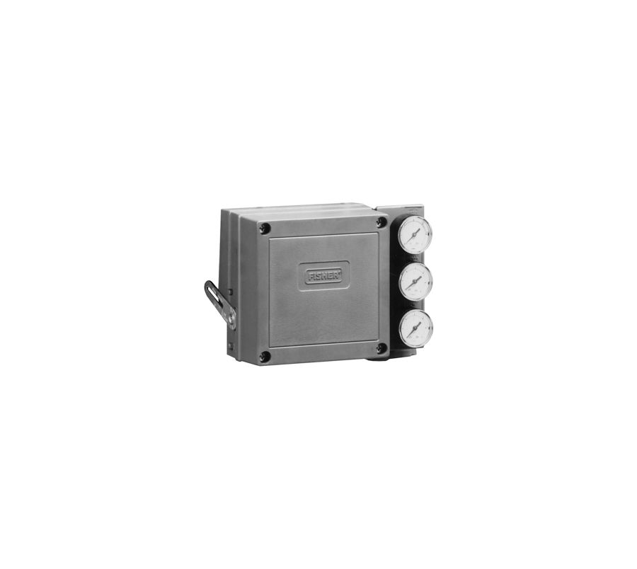

Van điều khiển
Van điều khiển Fisher dạng cầu (easy-e, GX, EH, HP), van góc, van 3 ngã, van xoay Vee-Ball, V500, van bướm hiệu suất cao và van cho điều kiện khắc nghiệt – chống xâm thực, giảm ồn,…
Van điều khiển, positioner FIELDVUE, regulator, actuator và thiết bị đo mức Fisher cho dầu khí, lọc hóa dầu, điện và nhà máy. Fast Group cung cấp hàng Fisher chính hãng, đủ CO/CQ Emerson, tư vấn model code và cấu hình trước khi báo giá.
Từ van điều khiển easy-e, positioner FIELDVUE DVC6200 đến regulator 627, 67C – chọn theo nhóm để xem đúng dòng thiết bị và cấu hình phù hợp.
Van điều khiển Fisher dạng cầu (easy-e, GX, EH, HP), van góc, van 3 ngã, van xoay Vee-Ball, V500, van bướm hiệu suất cao và van cho điều kiện khắc nghiệt – chống xâm thực, giảm ồn,…

Bộ điều khiển van số FIELDVUE (DVC6200, DVC2000, DVC7K), positioner khí nén 3582, 3610J, bộ chuyển đổi I/P, bộ truyền vị trí, volume booster, trip valve và phần mềm chẩn đoán ValveLink.

Bộ điều khiển quá trình khí nén 4195K, 4194, C1 và thiết bị điều khiển – đo mức chất lỏng 2500/249, L2, DLC3100 cho bình tách, bồn chứa và thiết bị áp lực.

Van giảm áp (regulator) Fisher cho khí, khí nhiên liệu, hơi và chất lỏng: 627, 299H, 99, EZR, EZH, CS800, 67C, van điều áp ngược, van xả, tank blanketing và slam-shut.

Regulator LPG, internal valve, van ngắt khẩn, excess flow valve, back check valve và phụ kiện Fisher cho bồn LPG/NH3, xe bồn và trạm nạp.

Actuator Fisher: màng lò xo 657/667, piston 585C, actuator xoay 1051/1052, 2052, 1061, actuator điện easy-Drive và tay quay – kèm tư vấn chọn theo lực/momen van.
Fast Group Engineering cung cấp thiết bị Fisher chính hãng kèm năng lực tư vấn kỹ thuật từ đội ngũ hơn 10 năm kinh nghiệm dầu khí (Halliburton, Baker Hughes, SLB). Chúng tôi hiểu yêu cầu mua sắm của VSP, PTSC, PV GAS, nhà máy lọc hóa dầu và nhiệt điện: từ đọc nameplate, chọn cấu hình đến hồ sơ thầu.
Gửi model, ảnh nameplate hoặc datasheet van để nhận tư vấn cấu hình và báo giá nhanh.
Positioner số HART chủ lực; phản hồi không tiếp xúc, chẩn đoán trực tuyến; bản lắp xa DVC6205/6215.
Họ van easy-e: ED/EAD/EDR trim cân bằng, kín kim loại; Class IV/V tới 593 °C; nhiều trim đặc biệt.
Actuator màng lò xo cho van cầu; 657 tác động thuận, 667 tác động nghịch; size 30–100.
Regulator trực tiếp khí áp thấp – cao; áp vào tới 138 bar; 627R/627MR có van xả trong; farm tap.

Lọc điều áp cấp khí thiết bị phổ biến; 67CFR có lọc; bản inox 67CS; áp vào tới 17,2/27,6 bar.

Positioner khí nén cho van tịnh tiến actuator màng; bản 3582i nhận 4–20 mA; split range; 3582NS hạt nhân.

Van bi chữ V (segmented ball) CL150; đặc tính equal % cải tiến; NACE; bản slurry V150S.
Bộ điều khiển/truyền mức khí nén 2500 + sensor 249; mức, mặt phân cách, tỷ trọng; tới CL2500.

Regulator pilot tích hợp, áp vào tới 12,1 bar; 299HR xả token, 299HV slam-shut VSX8; monitor không xả.
Tìm đại lý Fisher Emerson tại Việt Nam? Cách chọn nhà cung cấp van Fisher chính hãng, kiểm tra CO/CQ, hồ sơ thầu và thời gian giao hàng…
Mua qua kênh ủy quyền hay nhà phân phối hàng Fisher chính hãng? Cách xác minh nguồn gốc, CO/CQ, bảo hành 12 tháng trước khi đặt PO.
Fast Group cung cấp van, positioner, regulator Fisher Emerson chính hãng, đủ CO/CQ theo lô, hỗ trợ model code, hồ sơ kỹ thuật và đấu thầu.
Mua van Fisher Emerson chính hãng ở đâu: TP.HCM, Vũng Tàu và giao toàn quốc. Cách gửi RFQ, chứng từ CO/CQ và thời gian giao hàng.
Cách kiểm tra van Fisher chính hãng: nameplate, serial, CO/CQ, chứng từ nhập khẩu. Rủi ro hàng trôi nổi, hàng cũ tân trang trong dự án.
Vì sao van Fisher không có bảng giá cố định, các yếu tố quyết định giá và checklist thông tin cần gửi để nhận báo giá Fisher trong ngày.
Fisher TP.HCM · Fisher Vũng Tàu · Fisher Đồng Nai · Fisher Bình Dương · Fisher Hà Nội · Fisher Hải Phòng · Fisher Quảng Ninh · Fisher Thanh Hóa · Fisher Quảng Ngãi · Fisher Đà Nẵng · Fisher Cần Thơ · Fisher Cà Mau · Giao hàng toàn quốc
Có. Fast Group là nhà phân phối hàng Fisher chính hãng tại Việt Nam: van điều khiển, positioner FIELDVUE, regulator, actuator và thiết bị Fisher (thương hiệu thuộc Emerson) chính hãng, nguồn gốc rõ ràng, đủ CO/CQ Emerson theo từng lô, bảo hành chính hãng 12 tháng kể từ ngày giao hàng, kèm tư vấn cấu hình và hồ sơ kỹ thuật cho dự án.
Fast Group tiếp nhận RFQ tại trụ sở TP.HCM (150/41 Nguyễn Cư Trinh) và văn phòng Vũng Tàu (51 Lê Văn Lộc), giao hàng toàn quốc. Gửi model hoặc ảnh nameplate qua Zalo 0938 888 958 hoặc email để nhận báo giá trong ngày làm việc.
Không. Fisher trên trang này là thương hiệu van điều khiển, regulator và thiết bị FIELDVUE thuộc Emerson (trước đây là Fisher Controls, thành lập năm 1880 tại Mỹ). Fisher Scientific là hãng thiết bị phòng thí nghiệm, không liên quan.
Với van điều khiển: lưu chất, P1/P2, nhiệt độ, lưu lượng hoặc Cv, size, class, vật liệu, actuator và positioner. Với hàng thay thế: ảnh nameplate (serial) là đủ để tra đúng cấu hình. Kèm số lượng, nơi giao hàng và yêu cầu chứng từ.
Trụ sở TP. Hồ Chí Minh và văn phòng Vũng Tàu đều tiếp nhận RFQ, tư vấn cấu hình và bàn giao bộ chứng từ CO/CQ; bảo hành chính hãng 12 tháng kể từ ngày giao hàng. Yêu cầu gửi trong giờ làm việc được phản hồi trong cùng ngày; giao hàng toàn quốc.
150/41 Nguyễn Cư Trinh, P. Cầu Ông Lãnh
51 Lê Văn Lộc, P. Vũng Tàu